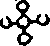
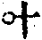
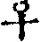
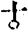
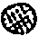
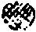

天界覺浪盛禪師語錄卷九
法語
洞宗標正
師室中因諸門人侍立有僧出問洞上宗旨乞和尚指示師良久云會麼曰不會師曰你不如西天外道曰某不曾問有言無言師云卻又似西天外道進云惟大慈悲曲垂方便令我得入師云雪竇道邪正不分過由鞭影如何是鞭影進云莫是良久處麼師云一翳在眼空花亂墜進云外道見箇甚麼便得悟入師云劫賊入空房進云莫是疑根斷絕去麼師云我說你不如西天外道僧禮拜歸位師乃顧眾云汝等還知价公始終機緣之妙密乎公初為沙彌時念心經至無眼耳鼻舌身意處輒自捫其面以問師曰我分明有何故經言無今人讀經能如此觸發天機即其師亦可使猛然自討入處乎從此參方首謁南泉因為馬祖諱辰營齋泉問眾馬祖還來否公乃出曰待有伴即來南泉是箇通身手眼底漢也只得道此子雖後生甚堪雕琢公曰和尚不得壓良為賤正如虎生三日氣已食牛尋常輩孰能當其爪牙嗣于忠國師無情說法話有省已向荊棘林中能下足矣及辭雲巖問此去有人問百年後還邈得師真否如何秪對此正向沒孔鐵鎚重下楔也不是此老大難酬他乃良久云秪者是殺人刀活人劍不妨利害若是德山臨濟未免以棒喝用事且道良久云秪者是還與棒喝有同別也無公既已悟無情說法到此如何又開眼尿床沉吟不下莫是識法者懼所謂承當個事大須審細麼秪者一劄愈見銀山鐵壁大火聚中無你進步處無你躲根處無你轉身吐氣處從此所悟所解底命根不容不斷但不能向月明簾外[囗@力]地一聲跳出身裏之門而得全機大用奮激不已忽于過水睹影乃打失眼睛大悟前旨正如德山於上座欲點那個心處不能出脫乃以潭不見龍不現致個疑頭迫得無路無門忽於吹滅紙燭處乃絕後甦來大叫曰從此天下老和尚欺瞞我不得也明眼人試看价公與德公悟門是何如哉故公乃作偈自述悟證與石頭參同契之明暗妙協雲巖所付寶鏡三昧之渠我交參深相符合即以重離回互而立正偏五位之宗旨使公不於此得真正全機大用何能自云切忌從他覓迢迢與我疏即有悟得自己若不見人以妙密鍵鎚打開九重錦縫透過百種冤門則大法不明觸途成滯終不能自我作主折攝法界之群機也正以理明而自神動神動而自天隨如聖人作而萬物睹凡夫視為高遠之事殊不知萬物皆備于我我之聖心一發則天地萬物皆隨我而全現也人無聖心安得謂之聖人此价公頓悟真我之大機大用故能我今獨自往而法界皆全彰我之神用此正以我能作主則先天而天不我違後天而天奉我時也知盧舍那佛頓出藏身則三身四智十方應化皆互為主伴交參若但於頭頭上明物物上顯不知向上尊貴一路自別則不免於處處得逢渠即認渠為真我卻又落在驢前馬後之階下漢何能作主於法界攝重重涉入之三昧又何能處處逢渠即是我處處稱尊即我是渠哉師說至此驀呼云大眾正當恁麼時是個甚麼畢竟洞山祖面目作麼生眾愕然師云打破鏡來誰炤燭鶴沖霄漢出銀籠眾禮拜。
師曰吾洞上之旨不特能會通五宗之秘即如來一代時教之始終本末與儒道九流尊卑體用事理功位之名分無有不收攝而闡發者也此宗無語句亦無實法與人正以明破即不堪法死則不能活人舞吹毛擊塗毒無論搆得搆不得未免喪身失命矣不獲已立個正偏賓主玄要人境暗機圓相六義三關九帶十真等已是刻畫虛空雕鑿渾沌但先聖深恐法久成弊邪異繁興若不為物作則立此宗旨則萬世何從揀別真偽使此法眼妙心不昧滅哉古人之立法立言正如大易之立象立辭也使無大易之象辭則天下萬世何從而得天地造化之幾微人物生死之性命哉所貴於觀象玩辭而顯仁藏用也人每以理為活數為死不知理雖活或以意見自用而反落於怪邪數雖死能存法則而可悟其天然有不得於象則求之于辭有不得于辭則求之于象或于言辭有盡而得象意無窮是法住法位世間相常住不于此可悟耶吾于疊三變五中見其象畫之奇偶妙協乃知偏中至不可以兼中至而重犯兼中到也何妨拈出以待神明之者如太極含四象為五位即是河圖洛書以中五含十不過一奇一偶之參兩錯綜而成其中和位育也六爻之偏正回互者即奇偶之兼帶妙協也蓋萬物無不負陰抱陽陰不抱陽則孤而不產陽不負陰則寡而不生陰陽偏勝則散亂斷滅何以承天命之化育乎故聖人深幾裁成之揭其奇偶之樞機而變理其太過不及以致中和則天地人物各自正其性命此參贊位育之功能惟其善用九六轉變其乾坤造化所以為至神至妙也重離如太極之含四象者即五中之十如荎草之含五味金剛杵之具五楞也之中一圈為天地人物之心即太極為重離含四卦之兼中到也東方一圈即少陽之正中偏也西方一圈即少陰之偏中正也南方一圈即太陽之正中來也北方一圈即太陰之偏中至也覺範洪公以互卦為回互以單卦為互疊先大過中孚而後單巽單兌特一說耳少陽少陰體尚未純但能疊進而未可即變太陰太陽體已至純但能變轉而不可復進吾洞上借此配喻偏正回互以用疊為三變盡成五誰得此意象外之深旨乎回互者如教中之回向也內外上下因果本末皆各相含攝之謂也或回正向偏以理奪事則無事而不理可奪色法以明心也或回偏向正以事奪理則無理而不事可奪空心以明法也或回正中事理之全體而來向全用則事理俱奪而可即妙有以成等正覺也或回偏中事理之全用而至向全體則事理俱不必奪而可即正覺以成大化權也或回此正偏事理之體用向此天然尊貴無著真宗全提法界則向上兼中到又何言哉重離六爻偏正回互疊三變五天然妙協原非意見所能強為之分合也此重離之偏正混融也以重離初爻之奇疊上為重巽下斷如正中偏也以重巽初爻之偶疊上為重兌上缺如偏中正也以本離疊上成巽兌為三卦則不可更疊矣更疊之則又成一重離矣既為重兌則當用變變則當先從內卦之兌翻轉成巽合外卦之兌變為澤風大過則四奇在中兩偶在初上如坎中之滿為正中來也大過既成則又當變此內卦之巽為兌變外之兌為巽以成此為風澤中孚則二偶在中四奇在初二五上如離中之虛為偏中至也以四而疊變既盡則兼到自成中五耳或謂正來偏至聚訟至今究何決焉曰疊如二少變如二太約幾易簡矣舉二而參統之如陰陽之藏太極如寒暑之藏天舉四而中五統之如太極之含四象如天之四時蓋象數奇偶費隱先後可互徵也吾概舉其綱幾而變化在其中矣正偏兼中兼何須重舉乎寂然不動感而遂通天下之故所謂感為易體也吉凶悔吝生乎動不有感而動之則何卦爻之疊變哉經中以應觀法界性一切由心造而心不動則十界聖凡之名相了不可得有何四句可離有何百非可絕說個絕代靈心亦強名也正以十界之機感乃應之正中偏者以上黑下白為少陰兼少陽也偏中正者以上白下黑為少陽兼少陰也正中來者以中黑外白為太陰之全體協太陽來也偏中至者以中白外黑為太陽之全用協太陰至也兼中到者以全放全收其黑白而混融之不可以黑白表顯名跡到此俱化類之不齊混則知處不落是非無敢和矣此大總相一真毘盧華藏法界圓融行布不可得而互表互遮者也大易以陽為奇為正為君為白以陰為偶為偏為臣為黑吾宗則借奇為陰為正為君為黑借偶為陽為偏為臣為白所謂夜半正明為正中偏天曉不露為偏中正又不當執此以相反其奇偶也引而伸之何處不具掃而置之原自不壞此後之說吾何能限然寧有逃于中五者哉祗如八八六十四卦中奇即此一奇偶即此一偶奇偶太極即費即隱分之則大絕方所合之則細入無間就中行布圓融彌綸一際死不礙活活不礙死孰能分合此中之奇偶正偏渠我賓主哉此惟親悟親證無我無位之真人八于剎那際無間三昧者始能傳受此千聖不傳之秘旨也。
正中偏者即君視臣也以上黑下白而體尚與用分方將使合如堯之聖君乃能求舜之賢良是勞于求臣以盡君道此所謂妙容雖不動光燭本無偏也亦謂君向臣亦謂父垂慈養子亦謂主能接賓。
偏中正者即臣向君也以外白內黑而用始從體歸方將得一如舜之賢臣乃能求堯之聖明也勤于事君以盡臣職此所謂不墮諸異趣凝情望聖容也亦謂臣奉君亦謂子承歡孝父亦謂賓能對主。
正中來者即君御極也以黑在白中而體已成其用如不顯惟德百辟其刑此所謂妙德尊寰宇高明朗太虛也惟我獨尊故又謂之功無能與比即篤恭而天下平亦謂父仝業付子亦謂主能作賓。
偏中至者即臣攝政也以白在黑中而用已成其體如玄德升聞重華協帝此所謂靈機弘聖道真智利群迷也率賓歸王故又謂之共功同歸至化即共樂無為之治亦謂子全身紹父亦謂賓能為主。
兼中到者即君臣道合也以黑白渾融而體用一無分別如堯舜之揖讓德成舜先賓能相續為主而堯退位又作主中主堯既不居正位舜亦不居偏功此所謂渾然無內外和融上下平也亦謂之功功是無功無不功也亦謂之父子恩忘斧斫不開向上尊貴之正命食亦不取矣此秘密藏千聖不傳豈言所可盡哉。
示諸學人及眾居士
子昔年常會吾漳戴今梁觀察及予父弟于維揚舟中戴公曰聞佛教有超凡入聖之說師果能親證其旨乎予曰須深悟得游戲三昧可也公曰如何則能悟予曰公見夫戲子乎在臺下即凡在臺上即聖公曰何也予曰戲子在臺下人或稱之你為人真周公孔子戲子必大喜人或毀之你為人真仲子齊人戲子必大怒及至登臺則親身為周公孔子卻不自喜儼然仲子齊人卻不自怒吁豈你真能為周孔而仲齊亦豈你真不足為哉此何以故蓋彼臺下以無為有故喜怒生臺上以有為無故是非泯以無為有故妄執成凡以有為無故妄解成聖然則凡夫墮落與聖人超脫只在一念有無之轉機也而聖凡何曾有實法乃迷悟自成其墮超耳公大喜曰此天下奇論讀盡千言萬語不如臺下臺上一念有無之轉機而成聖凡之一語令人開悟無迷真痛快斬截也予父存三居士曰審如此語則觀音所以三十二應者非獲此如幻解脫法門乎予曰正是此意第當局難得不迷耳所謂卻來觀世間猶如夢中事若主人公心眼不惺則未免又為夢幻空花所惑亂也予弟季玉曰瑋前日見林間錄載王文正公當大拜時宴會官僚作戲公題詩曰諸優戲場中一貴復一賤心知本是同以故無欣厭覺範大師曰謂此老通身是眼一點也瞞他不得正符此意予笑曰吾弟從此為人處世須是眼睛鼻孔端正始得戴公曰善善決不可少師末後者一錐劄也嗚呼此予戊午年寓金陵天界因戴公挽予過廣陵一番游戲時吾徒大方大圓二子侍側猶能記之計今二十餘年戴公與吾父弟皆作古人可勝歎哉我今重新舉似你諸學人及眾居士果能忘軀為法依止叢林參承師友切不可於名言相法中妄生分別執取而起是非憎愛冤親苦樂之心以自惑亂其身心性命亦復惑亂他人之解脫知見也予嘗示諸職事曰汝等參學略能參破生滅妄想之麤跡則自不為世間名言相法所顛倒也我試令你首座今日退席為本堂侍者即令本堂侍者立居首座之位侍者儼然以首座自任首座安然以侍者執持毫無上下彼我之分庶于解行少有證據若纔令悅眾退下作副悅眾令副悅眾退下作散單便如奪了封侯印心憤憤口悱悱寧可知識不親覲生死不參究者個體面決不成得特於半夜捲單而行豈真有為法求依止善知識之心者乎嗚呼此天下弄虛頭好名學人通病以類推之皆若是也雖有醫王亦當拱手矣凡住叢林之人毋論事之巨細皆痛治偷心求親證雖群居雜處能使上下相忘于道術凡聖相忘于戲游何復有生死是非之能惑亂又何慮身心性命之不超脫伏惟珍重。
示熊仁者
舉雪關大師拈丹霞訪龐居士公案云龐公若無後語幾乎被靈照喪卻家風秪如道赤土塗牛奶意作麼生不令蜂蝶誤認隔墻花師云雪關師兄蹉過也龐公雖是沒牙大蟲其爪甚利靈照如鸞鳳沖霄隱顯莫測于丹霞處明露秋光于龐公處暗藏春色不然何處見靈照機捷哉熊仁者既已貞節自持復能參悟自性若於此淆訛處透得過始有出身活路也更示之偈曰靈照把金針妙密超今古丹霞共龐公繡出鴛鴦譜。
示粹如上座
太原孚公常于維揚講涅槃經至三因佛性三德法身正當談鋒縱橫處座下有禪者失笑孚公下座便請問發笑意禪者曰上座秪說得法身邊量事全未識自己法身在孚云便請大德指示禪者曰若要指示請暫輟講且向靜室放下諸緣收心斂念返己自炤當自見之孚依教即於是夜靜坐密觀至五更鼓角聲振動忽然大悟乃扣禪者門曰大德我從今日更不敢扭捏我娘生鼻孔也後見雪峰得蒙心印秪此一則便是千古參學做工夫底標準也天下人誰不向外馳逐世緣與言語文字道理知見殊不知饒你說得天花墜石點頭皆是光影門頭生死業識何曾與本分一毫相干使太原不遇禪者指點則盡平生以豎窮三際橫遍十方為法身佛性也又安得一旦回光便悟從今更不敢扭捏娘生鼻孔哉今上藍粹如上座素有參究之志善能撐持法門第惜未遇人與之指點今特請圓通開示倘能於此一念旋機則上座當追捲席耳聾者以振起馬祖之向上宗風也。
示胡調仲居士
李遵勗都尉常問法谷隱隱舉崔相國問徑山弟子出家得否山曰出家乃大丈夫所為之事豈將相之所能李公於言下大悟曰學道須是鐵漢著手心頭便判直取無上菩提一切是非莫管後來機鋒迅捷與楊大年慈明圓為方外友大振臨濟之宗亦秪因一言激勵遂深悟宗旨之妙又何曾以棒喝機鋒而指點哉於此觀之乃知將相之功名勳業重大而其貪欲恩愛愈深故於生死結縛難得解脫耳豈真將相之才不足為出家之利器哉使李公不深悟世法之纏與心法之障安能慨然曰須是鐵漢而是非莫管然則不唯世法之將相是非莫管即于心法之佛祖是非亦莫管矣故佛祖出世秪與人解三種縛一凡夫為事縛聖人為法縛宗門人為玄妙縛透此三種縛始可與語本分風光向上尊貴也調仲居士能以此意時時提撕則金剛在握雖佛祖當前不容覿面也又何有世情心法所能當其鋒哉驀召居士云看劍。
示諸喫齋及戒殺放生者
一日諸居士來參師問汝諸人來此何為曰求和尚慈悲指示出生死路師曰我不指示你你不肯行雖指示何為曰和尚未指示安知弟子輩不能行師曰我被人哄得多了費卻許多老婆舌頭他何曾行逢人皆說我曾參某知識來我曾皈依來甚麼相干卻反令人謗曰行如此事底豈不是曾參知識者行如此事底豈不是曾皈依知識者善知識有甚用處參得底到不如我不參不禮底此等不是我哄他卻是他哄我也居士禮拜曰即此是大慈悲也乞細為指示必不致哄和尚孤負和尚也師喜見眉宇曰真個能恁麼那我且問你能喫長素斷殺業否曰眾中一二十人也有喫長素底也有喫花素底也有必喫不得素底也有決不能斷殺業底請和尚方便指示師曰你不喫長素底也禮敬三寶否曰我等現在敬禮師曰能信得佛是大慈悲否曰我誰敢不信師曰禮則禮你恪信不及在一切眾生皆有佛性但因殺業不除墮落三途為畜生類佛稱三界大師四生慈父則胎生卵生溼生化生雖則互為父母妻子佛視之皆如一子之想皆有佛性者也汝等既知禮敬佛又去殺佛之子喫佛之肉及殺自己父母妻子及喫自身之肉佛還歡喜也無喫人之子禮人之父其父必切齒恨之必怨報之佛不同世人必須救汝莫殺害眾生即是不殺害諸佛不殺害父母不殺害自身也豈有殺佛之子與殺父母妻子之人不墮地獄及輪迴冤報者乎一切豬羊雞鴨魚鱉鰍鱔之類皆是殺業最重者也汝等既知人身難得佛法難逢知識難遇今纔離雞鵝鴨等身而得人身便不肯保全人身卻又去喫豬羊雞鴨等身豬羊雞鴨曰你者強惡眾生承佛威力纔得個人身卻便忘卻佛力又來喫我教你再打一轉又來作我豬羊雞鴨不知那強惡眾生又來喫你也只是汝等無六通徒見他苦不聞他怨以強凌弱冤冤相報有何了日佛菩薩費了千辛萬苦勸化你誘引你如醫藥人以你病苦九死之地用了許多良藥救得活來教你不要喫此犯諱忌物若再喫則病又返了要死了我救不得了你今只圖一時口腹不圖萬劫冤報有甚于喫藥忌反病喫了一個月藥又返了病醫生與父母亦恨之欲棄如不顧也我佛菩薩費了千生萬劫苦心救得你脫畜生身得人身不肯忌口喫了反藥則不為自負己靈其孤負佛菩薩與父母養育之恩何劫能酬報哉儒者尚云寧殺身成仁無求生害仁汝今殺生害仁殺佛害身其生生自殺又誰能救哉今所謂戒殺者若非喫長素皆非真戒殺也但自手不操刀以為戒殺殊不知假手殺人之罪更甚也喫素戒殺不名善人只喚做不作惡人如人曰我不殺人放火我不奸淫犯義此但喚做不敢作惡人何可名善人若是善人則自己喫素斷殺又能勸人喫素斷殺又能放生布施救濟饑荒憐愍孤苦修橋布路造亭施茶設渡施藥賑濟死亡收葬骸骨及念佛度僧建剎造經種種功德與化導惡人同修善事乃名為善人汝等殺業未斷則此刀兵盜賊夭枉災危尚免不得躲不過敢以禮拜善知識作些小佛事喫得肉已飽來尋僧說禪公然自稱為善人則閻羅大王異日差牛頭夜叉下請書請到刀山劍樹鑊湯爐炭與入披毛戴角之類皆是此身身行惡而口口稱善之人大有分也莫怪山僧惡口蓋勸人須用殺人言的的苦口是良藥如今天下刀兵不息殺人遍野流血成河骸骨如山城邑如莽者是何罪使之皆是殺淫盜業使之也使世人早能聞我如此斷惡之言戒殺之語則天下太平萬民極樂如蓮花國裏人也前年予在淮安見數居士來參禮予問此是誰曰是久皈依嵩乳印蓮二和尚者久為道場護法予深喜之與他提起古人公案問他父母未生前一著子事彼不能對予曰說你久參知識久護道場如何問者本分事開口不得既不知本分事又參甚麼知識護甚麼道場此中好茶好齋沒人喫要你來喫麼不唧溜漢恁麼則嵩印二公也不得無過傍邊一僧曰他肯喫好茶好齋還好他還要喫鮮奇之貨山禽野獸海錯珍異之物也予驚曰莫謗他好僧曰和尚前敢作拔舌業予大呵之曰快取紙筆來我出一擯帖先將嵩公印公二人稱和尚者擯出如此人不足較也你為一方知識如何藏此殺佛殺父母之人於此佛道場中破壞佛法乎嵩印二公大驚而諸居士乃痛哭流涕深為懺悔曰大慈悲父救我等出此不赦之苦也從今之後永斷殺生永喫長素更當放生救殺也予乃改喜曰若是則超凡入聖全在此一轉機也天地之大德曰生生生不息曰命成佛成祖是此生機作聖作賢是此生機為父為母養子育孫是此生機百工技藝故生意皆此生機也捨此生機則皆是死路皆是殺機人藏此殺機則此身心意知家國天下乃至文章事業無往而非殺機又何可與天地合德與生民立命哉汝等果能充此戒殺放生之心則生生之意充此如來藏心成此一真法界也何復有餘蘊哉於是諸居士痛哭感泣發誓并乞授三皈五戒深參究父母未生前者一著為超凡入聖之本也因請侍者書之以示未聞。
示笑峰諸禪人
杖人不能學達磨於少林面壁卻要學孔子集眾聖大成學得孔子集眾聖大成則能傳達磨心法正印能傳達磨心法正印則能集孔子眾聖大成或時學達磨則易或時學孔子則難至於達磨已於西天雄辭深辨收伏六宗特泛重溟來我東震斥相指心不顧諱忌九年面壁六遭服毒乃得傳此心印然後隻復西歸如此則又有難於孔子只轍環於我東土之天下也雖然此土宗風至於二枝五派之後門庭堂奧各出異同不有刪定作述之手眼安能存此千聖不傳之真宗旨哉知此則西天之達磨即東土之孔子東土之孔子即西天之達磨也此世法出世法之大關鍵又孰能窺之哉會麼此中別有同條意留與古今能擇人。
示室中諸子
善學魯男子之閉戶不納者則能作柳下惠之坐懷不亂今人動輟欲學超佛越祖之談絕不學了生死性命之行真是自暴自棄為背馳之人深可哀也杖人先教人學一乞兒行然後大事可成彼乞兒六親無靠骨肉無情六根敗缺藝術不能無所可用於世且上無片瓦下無卓錐之祖業根基可賴求食不得充饑求衣不得遮體到處遭人擯斥此身無所安生雖極苦不傷至勞無怨卻也風寒暑溼不能侵榮辱得喪無足感至於功名富貴利欲恩愛既已不來尋他他亦無可繫戀惟有絲命是存卻似個避難英雄潛機奇傑又似個參禪慕道捨身命學行菩薩行底漢子只恐有些子偷心不斷使能撒手甦來卻是無人柰得他何也又何富貴之所能[泳-永+(瑤-王)]貧賤之所能移威武之所能屈恩愛之所能奪與夫生死危疑之所能變亂其性命哉能行如此丐兒之行者則又無事不可為無厄不可度無蘊不可破無法不可行末法之秋安得有能學此行者與之入如幻解脫法門哉予又當教參學人先須行三種行亦不異此是何三種一奴僕行二畜生行三糞草行能行奴僕行則已歸命於主人只唯主人之命是從故難捨能捨難戒能戒難忍能忍難行能行難止能止難入能入至於畜生行又進於無身命之可惜至於糞草行又進於無物我之可忘所謂以無心意無受行自能超出於聖凡以成大事也今人有能為法忘軀求了生死以證性命者能取法一二於此行者乎有能取法此一二之行則自不護惜皮毛與貪戀骨髓自為暴棄之人也即為善知識者亦須別具手眼勘驗此人與成就此法又如看地理之真脈或穿海過峽或起伏隱微或如草蛇灰線馬跡蛛絲必要求其真正氣脈不可為形勢變亂而失其真龍之結作也夫如是豈可輕易入此法門哉諸子須著精彩始得。
示某居士
有一居士來參請曰某切欲求個出世之路苦不能解脫身家之累乞師指一捷徑師曰我有個直捷法子居士可歸家將一片大白牌置在桌子上思量我此一生必不能解脫者何事此一生必可為者何事寫一行又思我十年內外三五年中五倫之內決不可推委必欲為者寫一行又思此一年內此一月中必欲為者何事寫一行又思此一日中朝夕之間必欲為者寫一行又思此一時中忽有不測之禍福危急之事我當如何處分寫一行又思或一口氣不來分付朋友妻子不及時與功名富貴勢利恩愛及文字道理知見功行皆用不著時欲如何得個轉身出路寫一行居士大驚曰到恁麼時如何是好師曰絕妙最直捷也又何不好之有士再拜求示一切要言師曰你但拼了命便萬事都了更有甚麼不親切士曰者一死卻也難拼師曰啐死自然拼卻你何待汝去拼卻他士不覺通身汗下禮拜而去。
示韓叔夜居士
初祖達磨西來不為別事只求一個不自欺不被人欺底人而已矣二祖神光初見達磨更不求西來所傳底意旨但曰弟子此心不安請師為我安心達磨亦不教彼參究我西來所傳底意旨但曰將心為汝安光曰覓心了不可得磨曰為汝安心竟光於言下大悟異日磨復問諸門人各言所得獨神光作禮三拜依位而立磨曰汝得吾髓只此便是達磨與神光不自欺亦不被人欺也使達磨不深見神光真見不自欺處雖與曰為汝安心竟神光安能直下證悟使今人亦曰我亦覓心了不可得心既不可得則一切法亦不可得真如佛性菩提涅槃乃至一千七百機綠公案皆不可得且道此人還真自欺否若真不自欺則不被人欺亦終不肯欺天下古今也今居士能參悟此一則心法則一千七百皆是不自欺之心法也又何佛祖心法之不在我哉因與立一軒名曰在我以自警云。
示潘臺平諸居士
諸公持普門品是經有不可思議自在神力但因以何心念而求開示悟入則大士即現如是神力而為開示悟入耳譬如洪鐘大扣大應小扣小應不扣不應又如寶鏡胡來胡現漢來漢現不來不現而普門之隨機感應又豈菩薩之有大小差別哉須知經中所謂心念不空過能滅諸有苦之旨若能參透此心念不空過則心心寂滅念念圓常其十方諸佛三身四智諸大菩薩萬德莊嚴皆向此心念不空過中開示悟入而圓滿無餘矣又豈但能滅度解脫此三界二十五有之苦厄哉持是經者切要返己自求每日不致空過念念不致空過參究之久忽然超越世出世間獲二種殊勝則佛之知見本來現成不假外爍也。
示知白關主
從上佛祖秪是一個指迷人一切參學秪是一個自求人是故諸知識更無實法與人秪教人憤起自求生死性命之心一朝瞥然自悟了無一毫得失於其間也譬如失珠之者日久不知珠為何狀因問知識指示知識曰此珠清淨圓照覺明無礙更無纖毫損缺瑕玼你但能勤而求之則平生如意受用不盡也其人不知彼之所指但自心念口言此珠有如是清淨圓照有如是光明無礙又且毫無損缺瑕玼行住坐臥語默動靜如是想念思惟至於廢寢忘餐勞精疲神重增迷悶終不能獲反以善知識誑誕誤賺我如此參求之法絕無靈驗遂至退墮不信此古今參學之通病也彼知識秪與你說個形狀恐你妄認一切瓦礫土石泥丸魚目以為此珠使昭昭心目冷地尋求忽然親見則一切言語比況皆無所用也又何曾教你口言心念自障其參求之事哉故知識又為此一等執著語言知解之徒不能自求心性下落者更說方便曰你一切都莫思量莫念善惡但於一念未生之前看畢竟那個是你本來現成的尋來尋去自有一朝觸著磕著乃知元來在者裏也其人依舊不會雖撥轉那些念頭不知又走在者絕思量想念處何日能得所失之物乎所以古人不得已而行捧行喝用格外威神不知此等又復向他機境七花八裂如狂狗逐塊益見癡迷也又況此自心求自心借喻於覓珠與機鋒耳你能返己自憤不滯知解自參自覓如神光至於覓到了無可得之處始知本來不從外得亦非清淨圓照之所能比況也又如德山之於龍潭所謂潭又不見龍又不現忽然吹滅紙燈大徹悟者正風穴所謂萬古碧潭空界月再三撈摝始應知也信不吾欺矣嗚呼近世參禪人例皆向古人冊子上念言念語謂之參話頭做工夫至於頭白齒豁徒成一個自綑自縛漢何劫能自解脫哉知白上人一向參求師友為發明大事前已閉關三年今復禁足特使友人懷楮山中求開示參學直捷之旨并為諸友警策子嘉其誠因不惜葛藤為之敘其近日參學之弊使知自憤自力自求自悟不可執著一切知解以自障其悟門也勉之。
示潤白禪人
參禪別無捷法秪要吾人於日用動靜好好惡惡中急切返轉刀頭向自己主人公現成下落的命根上剖折一番看者主人公畢竟在那裏安身立命還有生死可依倚也無還有生死可了脫也無當時主人公因甚麼便自迷倒如今主人公因甚麼便不開悟若向者主人公討得一個明白透徹了無一法可得則更不疑佛疑祖疑生疑死自解作大活計然後再參知識亦不過與汝決擇見地之邪正及機用之殺活耳不見五祖演和尚悟道投機頌云山前一片閒田地叉手叮嚀問祖翁幾度賣來還自買為憐松竹引清風使演公不是自參自悟自到自證安得自述明悟如此今之學者飄蕩塵情昧滅心性大似迷子落他鄉絕無一念思歸故土安能叮嚀叉手親問祖翁而自知現成家業有此松竹清風之可受用哉潤白潤白你秪今還是在他鄉還是在故里你若擬議尋思又是萬里崖州去也。
羯磨後示大眾
真如界內絕生佛之假名平等性中無自他之形相何以真如平等乃爾蓋心佛眾生三無差別良繇真如不守自性忽起一念淨染之殊所謂身口意清淨是名佛出世身口意染汙是名佛滅度從上佛祖出世亦不過欲人守此清淨自心使無染污而已不見南岳參六祖祖問甚麼物恁麼來岳云說似一物即不中祖云還可修證也無岳云修證即不無污染則不得祖云善哉善哉即此不污染是諸佛之所護念南岳既云說似一物即不中更有何自他生佛垢淨是非之可擬議秪此一則公案便是經律論禪之宗旨誰能參悟此宗而會通戒定慧之妙旨乎是故從上佛祖種種設化無非欲人護持自己者段清淨靈心更無別法為修證也今人只知受戒不知發此清淨戒心有此清淨戒心則有此清淨戒相有此清淨戒相則有清淨戒行有清淨戒行則有清淨戒德有清淨戒德則有清淨戒性既有此清淨戒性則諸根清淨則諸塵清淨諸塵清淨則諸識清淨諸識清淨則我及法界擴而充之無不清淨矣又何有罪心而可得乎正以世人不能發此戒心安得了此罪心有此罪心則有罪相有罪相則有罪行有罪行則有罪業有罪業則有罪性若求此罪心了不可得又安有罪業罪性之可得哉如達磨大師來我東土亦未嘗將西來底禪教我東土人參東土二祖亦未嘗要參達磨西來底禪但云我心未寧乞師為我安心達磨亦不別指一法與彼但云將心來為汝安祖云覓心了不可得磨曰為汝安心竟若二祖不親自覓到了了不可得又孰能為彼安此心不惟二祖如此三祖求二祖懺罪亦使他自己覓罪了不可得乃曰為汝懺罪竟我等世人孰求安心如二祖懺罪如三祖之親到了不可得之玅密乎果能如是則戒定慧解脫知見等五分法身曾無差別又何有頓漸偏圓之可異我等現前大眾若能以今日如此發露懺罪而時時如此發露懺悔則清淨靈心時時不昧無染智行時時現前是名佛子受佛戒即入諸佛位矣雖然直須知我宗門有頓悟法要始能如是參如是持如是護念如是行道則佛祖法慧常住於世如日月燈常相接續永無斷絕也何可自生分別此為戒此為定此為慧此為禪之妄相隔越哉惟大眾善思念之不勝奇特不勝珍重。
示本空禪人
適有僧問杖人某甲欲住山去時如何杖人以拄杖於地上畫一畫云會麼僧云不會杖人曰諸方火葬我者裏活埋僧禮拜杖人便打僧云某甲話在杖人云你道看僧擬議杖人復打云鈍漢者一柄鋤頭也不解弄住甚麼山即連棒打出復有本空禪人持紙一幅求開示住山杖人熟視久之乃書此現成公案示之曰你若向者一座山子裏會得許你者裏作者裏息者裏喫者裏屙你若不會不如向十字街頭討冷飯喫去撞著一個半個也不見得不然且向諸方叢林裏東拶西拶或觸著磕著也不見得會麼咄。
示陳玉尺居士
古人云我宗無語句亦無一法與人不得已纔與人說個本分事卻是將惡水驀頭澆也孰能見門前剎竿即撩起便行雖然佛祖出世豈無方便激發使人自悟去蓋人之所以不悟者為有物障其悟門耳何者是障悟門之物但能不生異念則全體光明全體透徹如百千大海不起風波則徹底澄清無一毫迷昧雖然若執此理猶是偏見一邊更須會得繁興大用舉體全真曾無異物一任澄清與不澄清風浪與不風浪元不是他家事則自無聖凡是非可得染污此本分也不染污之旨又不是絕無一念為不染污但不見心外有法法外有心凡非他凡聖非他聖識非他識智非他智若真達不疑之道則聖凡魔佛淨染智識皆是自心限量之法故三祖信心銘云至道無難唯嫌揀擇但莫憎愛洞然明白纔有是非紛然失心一心不生萬法無咎六塵不惡還同正覺迷生寂亂悟無好惡知得此意則不特與佛祖把手並行亦與大地眾生一時同成正覺自古及今何曾有一法非心法何曾有一心是異心哉若能體會此意如人夢中說夢及乎憤地得一醒來或得親友驀地呼起則求夢中一法了不可得夢中一切幻法皆是吾心之幻法也知得是吾心幻法則夢非是夢不知是吾心幻法則覺亦非覺矣今參學底人秪要見得一法是心外之法則不見一心是法外之心也又何本分性命之不開悟無端生死之不了徹哉居士能久久於此親自勘破[囗@力]地醒來則見大千沙界海中漚一切聖賢如電拂矣雖然尚有向上關捩子直須撥轉始能驅耕奪食異類中行秉殺活刀開佛祖眼乃不墮於聖凡情解到者裏畢竟作麼生撥得轉向上關捩子請君吸盡西江水倒駕鐵船陸地行。
示石潮寧西堂
吾宗末裔傳至少林金沙太混若非吾廩山翁于宗鏡書祖披出純精別行一路幾千人天冒昧何能迥拔今時哉篤生壽昌老祖掘出大好山中掀翻黃龍頭角正是胸中迸出始能遮天蓋地也及接我東苑先師便驀地推下險坑使自跳出捉敗者老漢莫作怪即杖人撞開祖父之門全是赤身挨白刃以故生平不拘拘于三玄甲冑五位鎗旗別施符劍八面破敵今時之弊正坐在各執名器不能神其殺活終屬濁智流轉不鑑溈仰雲門法眼之後因何而自絕乎吾子始于太平棒頭得火燒裙帶消息今復來此烹煉自應如九轉神丹變化不測異日大起吾宗則皋鶴之聲光自遠矣子當慎之。
天界覺浪盛禪師語錄卷九